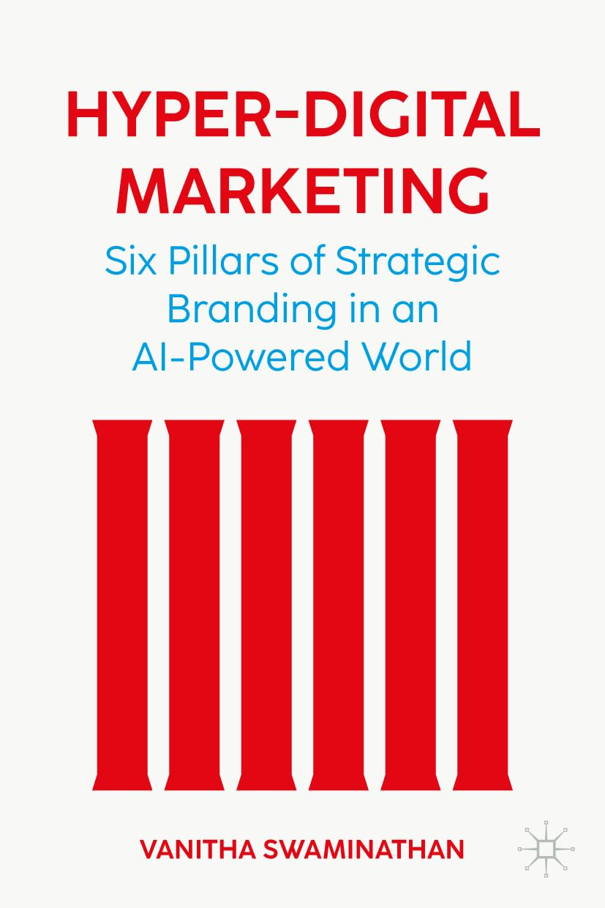

Vanitha
Swaminathan
Associate Dean & Professor

Vanitha Swaminathan, Associate Dean for Research and Strategic Initiatives and Thomas Marshall Professor of Marketing at the University of Pittsburgh School of Business, has released a groundbreaking new book titled Hyper-Digital Marketing: Six Pillars of Strategic Brand Marketing in an AI-Powered World.
Rapid advances in technology and the rise of artificial intelligence (AI) have ushered in a new era of hyper-digitalization. This shift is reshaping how organizations operate, transforming traditional marketing roles and creating new ones that require deeper integration across marketing, technology, and other business functions.
In Hyper-Digital Marketing, Swaminathan offers a practical framework for strategic brand thinking built around six key pillars designed for an AI-powered world. The book equips marketers, business leaders, and technologists with tools to navigate digital disruption, strengthen their brands, and drive sustainable growth in a rapidly evolving marketplace.
Hollywood Digest Review CEOWorld Article
Leadership Now Article Podcast with Tom Wheelwright
Purchase the Book
© 2025 Vanitha Swaminathan — All Rights Reserved